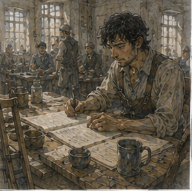

The invoices were ready. This was suspicious. Antonius had apparently taken NO EXTENSION WITHOUT ASKING as a challenge to remove every excuse for extension. Vale's cart arrived after breakfast. Not early. Not late. Annoying. I wore brown. Blue was for later. This was a normal distinction and not evidence of anything. The keeper looked at the brown shirt.
“Saving blue for later?”
“Yes.”
“Thought so.”
My wound had been quiet that morning. Dry. No heat. No spreading redness. Swelling low enough that the skin around the dressing looked less angry than it had three days ago. Phantom toes felt cold. Actual room was warm. Excellent. I wrapped my hands, took crutches, and went. No stairs.
I had slept downstairs because I knew I wanted the evening. Not sacrifice. Scheduling. Still annoying.
*
Vale's clerk put me in the same ground-floor side room. Table. Chair. Three invoice sheets. Three receiving tallies. One purchase order. Ink. Blank scrap. Water. No Antonius. Good. The clerk was a narrow man named Merrin. He said, “Vale said one hour.”
“Yes.”
“He said if you ask for more documents, I ask why.”
“Excellent.”
“He said you'd say that.”
Fuck him.
“What is the question?”
Merrin pointed.
“Do we owe all three invoices as written?”
Good. Defined.
“Supplier?”
“Three suppliers.”
Better.
“No connection?”
“Not that I know.”
“Do I need to know?”
“Probably not.”
Probably. Dangerous word. I looked at him. He corrected.
“No.”
Excellent. I started.
*
Before I touched the first invoice, I wrote the question at top of scrap.
OWE AS WRITTEN?
Not:
IS SOMETHING WRONG?
Important. If I asked whether something was wrong, every scratch mark became suspicious. If I asked whether Vale owed the amount written, I needed terms, goods, quantity, price, and accepted changes. That was enough. Probably. No. Enough for task. Good.
I sorted each invoice beside its tally and left purchase order centered.

Merrin watched.
“What?”
“Nothing.”
“You're watching.”
“Vale told me not to help unless asked.”
“Then you're supervising me not needing supervision.”
He considered.
“I suppose.”
“Expensive.”
“I'm already here.”
Fair. Invoice one was boring. This was good. Forty sacks lamp oil absorbent. Received forty. Price matched order. Freight matched. Delivery two days late, but purchase order had no late penalty. Annoying. Pay.
I marked:
1. PAY AS INVOICED.
Invoice two looked wrong immediately. Twelve coils waxed cord. Receiving tally said ten coils waxed cord and two coils plain cord. Invoice charged twelve waxed. Difference small. Still difference. I checked purchase order. Twelve waxed requested.
Receiving note:
SUPPLIER SHORT 2 WAXED. SENT PLAIN SUBSTITUTE. ACCEPTED BY J. RENN FOR PACKING USE.
There. Substitution accepted. Question was price. Plain cord cheaper? No price sheet. I looked at Merrin.
“Need normal plain-cord price from this supplier or recent purchase.”
He frowned.
“Vale said ask why.”
“Because they invoiced waxed rate for two plain substitutes.”
He left. Clock. Not actual clock. Sand timer on shelf. Of course Antonius had put sand. One hour. Good. Merrin returned with old invoice. Plain cord three bits less per coil. Two coils. Six bits. Not much. Still.
“Does accepted substitute mean accepted at ordered price?” I asked.
“No idea.”
“Terms?”
He brought supplier terms. No substitution clause. Good.
Mark:
2. PAY TEN WAXED AT ORDERED RATE. TWO PLAIN AT PLAIN RATE UNLESS J. RENN AGREED OTHERWISE.
Then:
NEED RENN CONFIRMATION BEFORE DEDUCTING SIX BITS.
Do not invent missing facts. Merra infecting me. Good. I checked sand. Thirty-six minutes maybe. Good. The room had street noise through narrow window. Cart wheel. Someone selling pears. A clerk arguing outside about seal wax. Normal office.
No one cared that I was solving two coils of cord. That helped. I took water. My left phantom heel felt as if it rested under chair. I knew better than to push against it. Right foot flat. Crutches against wall within reach. Work surface actually worked. Antonius had been right about arrangement cost. Chair. Transport. Materials. Merrin. Room.
Two copper labor credit did not mean my labor cost Vale only two copper. Annoying. Useful. Invoice three was the problem. Of course.
*
Invoice three came from Havel & Sons. Ceramic storage jars. Thirty large. Twenty small. Purchase order priced by dozen. Invoice priced by individual. Fine. Convert. Except invoice total was higher than conversion. I calculated twice. Still higher. Then noticed freight.
Purchase order:
DELIVERED PRICE.
Invoice:
GOODS
RIVER FREIGHT
CARTAGE
There. Potential double charge.
Receiving tally:
28 LARGE RECEIVED SOUND.
2 LARGE CRACKED ON ARRIVAL.
20 SMALL RECEIVED SOUND.
A second note:
2 LARGE REPLACEMENTS DELIVERED NEXT DAY.
Invoice charged thirty large, twenty small. Correct quantity after replacement.
But also a line:
REPLACEMENT CARTAGE.
Another cartage. I checked order. Delivered price. Meaning freight included? Usually. Maybe. Words matter.
DELIVERED PRICE TO VALE EAST STORE.
Yes. Freight and cartage included in price to location unless special term. Invoice added both. Could simply reject added freight and cartage. But why would supplier do that? Clerical. Or order amendment. I asked Merrin.
“Any amendment?”
He looked.
“Not in packet.”
“Ask why?”
“Because delivered price and invoice adds transport.”
He left. Returned with a note. Not amendment.
Message from Havel:
RIVER RATE INCREASE AFTER ORDER. WILL PASS DIFFERENCE AT COST. TWO REPLACEMENTS SENT WITHOUT GOODS CHARGE.
Antonius's clerk had written:
A.V. ADVISED.
That was not agreement. Maybe Antonius had agreed orally. I needed Antonius. No. Task one hour. Question can remain conditional. I checked receiving tally dates. Original delivery. Replacement next day. Freight line likely original shipment. Cartage original. Replacement cartage separate.
But message said pass difference at cost, not full transport. Invoice charged full river freight and full cartage, not difference. Maybe line labels bad. Need baseline included amount. Purchase order unit prices included delivery at old rate. If supplier wanted only increase, should charge delta. How much old rate? No rate sheet. I looked at sand. Maybe twenty minutes left.
“Merrin.”
He appeared.
“Recent Havel delivered invoice before this one.”
“Why?”
“Need compare embedded delivery price or separate transport practice.”
He left. Returned with two old invoices. Good. Both had unit prices slightly lower. No freight line. No cartage line. Delivered. Current purchase order unit prices were higher than old invoices already. Could be goods price change. Could include expected delivery. Still. I compared Havel quote attached to order. There.
Quote:
LARGE JAR, DELIVERED EAST STORE: 8B EACH.
SMALL: 5B EACH.
VALID 10 DAYS.
Order accepted day six. Price fixed delivered. Supplier message after rate increase did not change contract unless Vale accepted.
A.V. ADVISED.
Not accepted. Maybe Antonius intentionally gave me one where his own note mattered. Bastard.
I wrote:
3. DO NOT PAY TRANSPORT SURCHARGES AS WRITTEN YET.
ORDER ACCEPTED A FIXED DELIVERED PRICE.
HAVEL LATER ADVISED OF RIVER RATE INCREASE AND SAID IT WOULD PASS DIFFERENCE AT COST.
INVOICE APPEARS TO CHARGE FULL FREIGHT/CARTAGE, NOT CLEARLY THE DIFFERENCE.
NEED:
A) WHETHER A.V. AGREED TO CHANGE PRICE;
B) IF YES, PROOF OF ACTUAL RATE DIFFERENCE;
C) WHETHER REPLACEMENT CARTAGE IS HAVEL'S COST OR VALE'S UNDER DAMAGE TERMS.
I stopped. Damage terms. Purchase order.
BREAKAGE BEFORE ACCEPTANCE: SUPPLIER.
There. Replacement cartage supplier. So C resolved.
I crossed C and wrote:
REPLACEMENT CARTAGE SHOULD NOT BE VALE CHARGE UNDER BREAKAGE TERM.
Good. Then I noticed something worse. Receiving tally signed at east store. Two cracked jars were accepted onto tally as received, then replacement. If invoice charged thirty original plus replacements? It didn't. Only thirty. Fine. No hidden fourth mystery. Stop.
*
Before Antonius arrived, Merrin returned to doorway.
“Anything else?”
“Who is J. Renn?”
“East store receiver.”
“Competent?”
He looked offended on Renn's behalf.
“Yes.”
“Then why accept plain substitute without price note?”
“Because he receives goods.”
“Not price.”
“Correct.”
There. Role boundary. Renn had authority to accept useful substitute for packing. Maybe not authority to renegotiate price.
“Does supplier know that?”
“Should.”
Should. Again.
I wrote:
RECEIVER ACCEPTANCE OF SUBSTITUTE DOES NOT SHOW PRICE ACCEPTANCE.
Then crossed out DOES NOT SHOW and wrote:
DOES NOT BY ITSELF SHOW.
Better. Missing facts. I was becoming Merra. Terrible.
“Anything else?” Merrin asked again.
“No.”
He left. I looked at the three invoices. One clean. One six-bit ambiguity. One transport problem. Nothing dramatic. Still enough to justify hour. That was satisfying in a way I disliked. Antonius came in when sand had maybe eight minutes. He looked at pages.
“How long?” Antonius asked.
“Fifty-two minutes.”
“Good.”
“Do you owe all three?”
“One yes. One probably with six-bit adjustment depending on Renn. Third not as written.”
“Why?”
I explained. He read.
“First, yes.”
“Obviously.”
“Second, Renn did not agree to waxed price.”
“You know?”
“I can ask him.”
“Then six bits deduction.”
“Yes.”
“Third?”
He read longer. Then tapped A.V. ADVISED.
“I agreed to pay the increase in river rate.”
There.
“Orally?”
“Yes.”
“Then you owe increase.”
“Yes.”
“Not full freight.”
“Correct.”
“Invoice line may represent increase badly.”
“Correct.”
“So need actual old and new rate.”
“Yes.”
He looked at replacement cartage.
“And this?”
“Supplier. Breakage before acceptance.”
“Yes.”
Good.
“What did I miss?” I asked.
Antonius pointed at the quote validity.
“Nothing important there.”
There. Then he pointed at two cracked jars.
“What happens to them?”
“Supplier replaced.”
“That wasn't question.”
Ah. Damaged jars still physically exist? Receiving tally said cracked on arrival. Were they returned? No return note.
“Where are cracked jars?”
“East store.”
“Who owns them?”
I looked. Supplier replaced without goods charge. Breakage before acceptance supplier. If Vale did not accept damaged jars, supplier owns unless abandoned. But they were at Vale store.
“Probably Havel.”
“Probably?”
“Contract says breakage before acceptance supplier risk. Replacement does not automatically transfer damaged goods.”
“Good.”
“Why care?”
“Because store clerk put them in waste ceramics. We use waste ceramics as packing fill.”
There. Vale may have consumed supplier property. Small. Annoying.
“Have you used them?”
“One may already be broken down.”
“Then you may owe scrap value.”
“Or Havel may have abandoned them.”
“Did they?”
“No record.”
I stared. Antonius smiled. Fuck.
“You knew.”
“I suspected.”
“This task was trap.”
“It was an invoice review.”
“You picked interesting invoice.”
“Yes.”
Rude.
“What do you do?”
I asked.
“Ask Havel whether they want cracked jars returned. If no, note abandonment. If yes, return what remains or credit scrap value if we used it.”
“Cost of cart to return might exceed scrap.”
“Yes.”
“So ask before moving anything.”
“Yes.”
There. Ordinary commerce. Not mystery. No criminals. Just two cracked jars becoming ownership problem because replacement did not answer disposal. Good.
I added:
DAMAGED ORIGINALS: CONFIRM DISPOSITION/OWNERSHIP BEFORE USE OR RETURN.
Antonius nodded.
“Useful.”
Two copper. Fine.
*
Sand ran out. Antonius looked at it. Then at me.
“I have another question.”
“No.”
He smiled.
“Not work.”
“Dangerous.”
“Do you want tea?”
I considered. That was extension. Not labor.
“Five minutes.”
“Very strict.”
“Yes.”
Tea came. I sat. My residual limb had begun low throb. Not bad. Shoulders fine because cart. Hands okay. Good. Antonius asked, “Why blue shirt yesterday?” I stared.
“You used your non-work question badly.”
“Apparently.”
“Because I wanted it.”
He nodded.
“That seems expensive for you.”
“Four copper.”
“I meant conceptually.”
Therapy danger.
“No.”
He smiled.
“Fine.”
I drank tea. Then left at one hour and seven minutes. Seven minutes unpaid tea. Excellent.
*
Vale cart took me to Guild infirmary because wound check was midday. Efficient route. Nerin was eating when I arrived.
“Sorry.”
“You should be.”
He finished bite. Good. Unwrap. Dry. No heat. No spreading redness. Swelling modest.
“Work?”
“One hour.”
“Seated?”
“Yes.”
“Anything stupid?”
“Commercially or medically?”
“Medically.”
“No.”
“Good.”
“Revision?”
“No new reason.”
“Casting?”
“No.”
“Stairs?”
“Not planning.”
He looked suspicious.
“Why?”
“Green door.”
“That isn't stairs.”
“Exactly.”
He rewrapped.
“Activity tonight?”
“Sit. Eat. One beer maybe. Kissing possibly.”
He froze. Excellent.
“What?”
“You asked.”
“I asked activity.”
“Yes.”
He laughed despite himself.
“Don't make me write that.”
“Medical record should be complete.”
“No.”
“Any restrictions?”
He pointed at me.
“Do not fall while kissing.”
“Prior attempt nearly involved ghost foot.”
His face changed from amusement to professional attention.
“What happened?” Nerin asked.
“Phantom left foot tried to step closer. Hip moved. Crutch caught. No fall. No pain.”
“When?”
“Two nights ago.”
“And you didn't mention?”
“It was not medically interesting.”
“It is now.”
Fuck. He asked details. Brief. No wound change. No actual load beyond crutch correction.
“Your movement plan can still include the missing foot when attention is elsewhere.”
“Yes.”
“Same as chair.”
“Yes.”
“Be careful.”
“Specific.”
“Keep both crutches planted if standing distracted. Better, sit.”
“Romantic.”
“I am a healer.”
“Barely.”
He threw cloth at me. Good. No theory. No magic. Just don't fall while kissing. Useful.
*
I had hours before green door. Could go home. Vale cart only covered Vale work to required destinations? It had taken infirmary because Antonius apparently agreed? Need not overcomplicate. From Guild I hired my own cart home. My cost. Correct. At lodging, keeper asked, “Two copper?”
“Labor credit.”
“So no coin.”
“Correct.”
“Still worked.”
“Yes.”
“Still owe.”
“Yes.”
She considered.
“Bad system.”
“Accurate system.”
“Mm.”
I ate lunch. Again. Work made me hungry. Sitting made me hungry. Breathing made me hungry. Nineteen.
*
Alden came by sweaty. Training over. He had dirt on cheek.
“How?”
I asked.
“Pessa cheated.”
“So badly.”
“She changed drill.”
“That's not cheating.”
“She didn't tell me.”
“That's training.”
“Fuck you.”
He stole cheese. I caught wrist. He twisted free. Good. I did not ask for knife. He noticed.
“Want it?”
“No.”
Lie. Maybe.
“Tomorrow.”
“Maybe.”
Everyone.
“What did you do?”
“Invoices.”
He stared.
“Why?”
“Debt.”
“Fun?”
I thought.
“Actually.”
He groaned.
“You're terrible.”
“One supplier charged wrong transport.”
His eyes died. I continued because friendship required suffering.
“Also two cracked jars may still belong to supplier.”
“I'm leaving.”
“Ownership after replacement is interesting.”
He left with my cheese. Good. I was smiling.
*
I slept for thirty minutes. Woke with phantom toes burning. Not cold now. Burning. Fine. I waited. Shifted thigh. Flexed knee. No. Rubbed around residual limb without disturbing dressing. Some relief. Then gone enough. Body tax. Not catastrophe. I changed into blue shirt. Four copper. Still good. Hair. Water. Beard medium. Could fix. No.
*
Before leaving lodging I considered changing back to brown. Why? Protect blue from smoke? Stupid. I had bought shirt to wear. Four copper cloth did not need preservation as museum object. I kept blue. The cart driver said nothing. Excellent. At one intersection we waited behind a brewer's wagon. I smelled malt. Hungry again. Impossible. I had eaten. Body disagreed.
I bought a meat pie from stall near green door and ate half before entering. The other half survived twelve seconds. Nineteen. The green door was quieter than last time. Lyssa wasn't there yet. Good. I had arrived before her. This made me feel stupid. Jorren was at table. He saw shirt.
“Again?” Jorren asked.
“Clothes can be reused,” I said.
“Interesting,” he said.
“Fuck.”
Nessa put bowl down.
“What?” Nessa asked.
“Nothing.”
“Stew,” she said.
Good. I ate. Octavia came later with thread wrapped around one wrist. Tam arrived for one drink and left after twenty minutes because he had work early. Normal. Lyssa came after them. She wore gray. Not blue dress. Good. She saw me. Smiled. Sat beside, not across. Good. No announcement. No everyone clapping. Excellent.
“Work?” she asked.
“Yes.”
“Exciting?”
“Cracked jars.”
She stared.
“Try again.”
“Two copper.”
“Better.”
“Labor credit.”
“Worse.”
“Still.”
She took bread. Everyone stole my food.
“Your day?” I asked.
“Rima made me redo three sleeves because I pinned one wrong and then kept copying the wrong length.”
“You propagated error.”
“I knew telling you was mistake.”
“Did you fix?”
“Yes.”
“Then useful.”
She bumped shoulder.
“Don't make my sleeves into lesson.”
“Wouldn't.”
Good.
*
Lyssa asked why I had picked invoices instead of training. Carrow again.
“Alden complained?”
“He said you chose paperwork.”
“I chose one hour of debt credit and this.”
I pointed at table.
“At stew?”
“At evening.”
She looked at me. There. Good.
“That's almost nice.”
“Almost?”
“You included debt first.”
“Chronological.”
“Greg.”
“Fine. I wanted enough body left to come here.”
Better. She smiled.
“See?”
“What?”
“Nothing.”
Danger.
“No lessons.”
“I wasn't.”
“Good.”
She stole another piece of bread. I let her. This was becoming expensive. We did not go outside immediately. Better. There was a card game. I joined. Lost. Again. I was improving at losing money recreationally. One copper. Stop. No more. Lyssa won three. Suspicious.
“Cheat?”
“No.”
“Then worse.”
She smiled. Jorren accused her too. Octavia defended. Nessa did not care. Someone near hearth argued about whether river fish tasted better before first frost. I had no opinion. This was unacceptable. I tried both fried pieces. Still no opinion. More testing required. Nessa refused free sample three. Commercial boundary. Good.
*
My residual limb began throbbing earlier than I wanted. Not severe. Enough. I shifted. Lyssa noticed because she was beside me.
“Need leave?”
“Not yet.”
That was all. No face. Good. We stayed. She told story about Rima's customer who insisted one sleeve was shorter because his left arm was “noble-born.”
“What does that mean?”
“No idea.”
“Was arm shorter?”
“Yes.”
“Then technically.”
“No.”
We laughed. I forgot throbbing for a while. Then didn't. Body. Fine.
*
Later we went outside. This time I sat on a low bench near wall. Nerin would be proud. Terrible. Lyssa sat beside. No crutch geometry. Better. We kissed. No ghost step. Because sitting. Excellent. Then she pulled back.
“You're thinking.”
“No.”
“You made face.”
“Everyone.”
“What?”
“Nothing.”
“Greg.”
“I was thinking sitting is technically superior kissing configuration.”
She stared. Then laughed so hard she leaned into me. Good.
“Don't say that again.”
“Why?”
“Because I might leave.”
“Important data.”
She kissed me to stop talking. Effective.
*
There was no relationship discussion. Thank fuck. She asked if I was free in two days. I asked why.
“Food.”
“Specific.”
“Rima closes early. Nessa said market has night stalls.”
“Date?”
There. She looked at me.
“Yes.”
Simple.
“Oh.”
“What?”
“Nothing.”
“Do you want?”
“Yes.”
Immediate. Good.
“Then yes.”
No maybe. Progress. Not philosophy.
“Transport?”
I asked. She rolled eyes.
“Figure it out.”
Fair.
“Ground?”
“Market.”
“Bad answer.”
“Mostly flat.”
“Better.”
“Food.”
“Yes.”
“That's all.”
Good. Date. Apparently. Nineteen. Fuck.
*
I left after another twenty minutes. Not because romance ended. Because residual limb hurt. I said so. Lyssa said, “Okay.” No disappointment performance. Good. Cart home. My cost. At lodging, keeper was asleep. Excellent. No interrogation. I drank water. Changed shirt. Checked dressing exterior. Dry. Swelling more than afternoon. Expected. I lay down downstairs. No stairs. Fine.
*
Sleep was mediocre. Not pain exactly. Position. My residual limb wanted one angle, right hip wanted another, phantom ankle insisted it was twisted under blanket that did not cover it. I rearranged pillow twice. Then three times. At some point I got angry at pillow. Reasonable. Morning came anyway.
My right shoulder was sore from crutches and perhaps from existing. Hands tender. No blister. Good. Activity cost had accumulated from work plus evening even though neither looked physical from outside. That was becoming familiar enough to be boring. Good.
Morning wound check was not scheduled. I inspected what I could. Dry. No heat I could detect. No spreading redness. Phantom heel felt buried in mattress below missing foot. Normal impossible. Fine. The Vale invoice notes sat in notebook. Two copper labor credit posted? Not yet. A runner arrived after breakfast with receipt.
LABOR CREDIT: 2 COPPER.
And below:
HAVEL CONFIRMED RATE DIFFERENCE ONLY.
REPLACEMENT CARTAGE REMOVED.
DAMAGED JARS ABANDONED TO VALE.
There. Resolved. No mystery. Supplier annoying but legitimate. Clerical invoice overstated transport because bookkeeper had used standard freight line for surcharge. Ordinary. Good.
Antonius had written at bottom:
NEXT TIME, ASK WHAT HAPPENS TO REJECTED GOODS EARLIER.
I stared. Rude. Correct.
I wrote on scrap:
NEXT TIME, INCLUDE DISPOSITION RECORDS IN PACKET.
Sent it back. Mutual. Good.
*
Guild sent no work. Edrin sent nothing. Holl sent nothing. Arlo and Vessa sent nothing. Alden sent no boy. Excellent. I had a date in two days. A two-copper reduction in debt. A blue shirt. A wound. No stairs today unless needed. No need. I picked up notebook. Could calculate how many two-copper tasks debt required. No. That would be stupid. I knew multiplication.
I closed notebook.
Then opened it again and wrote:
INVOICE REVIEW:
ASK WHAT QUESTION.
CHECK UNIT.
CHECK TERMS.
CHECK SUBSTITUTIONS.
CHECK WHO OWNS REJECTS.
That was work knowledge. Fine.
Below it I almost wrote:
SITTING BETTER FOR KISSING.
No. Some knowledge did not need documentation. I closed notebook again. The keeper came in carrying bread. I reached. She moved it away.
“What?”
“Pay.”
“For bread?”
“Two copper labor credit.”
“That's not coin.”
“Exactly.”
Terrible woman. The keeper slapped my wrist too late. Alden would have called that training. I called it breakfast. I stole bread anyway. Useful skill. Unpaid.